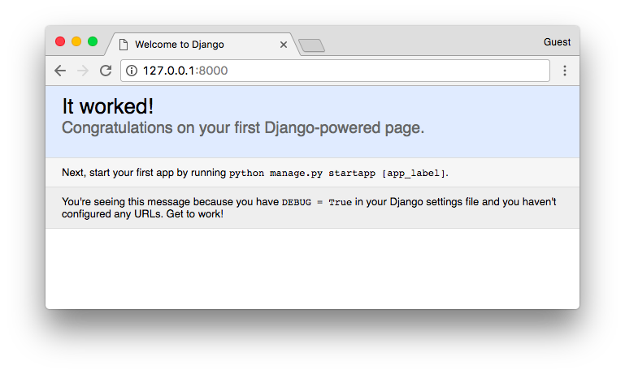
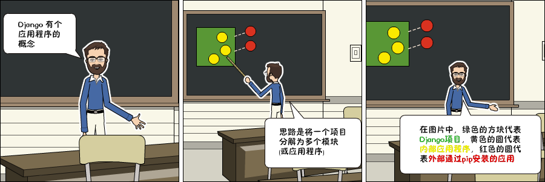

Django入门指南-第2章：创建项目
启动一个新项目
执行下面的命令来创建一个新的 Django 项目：
django-admin startproject myproject
命令行工具django-admin会在安装Django的时候一起自动安装好。
执行了上面的命令以后，系统会为Django项目生成基础文件夹结构。
现在，我们的myproject目录结构如下所示：
myproject/ <-- 高级别的文件夹
|-- myproject/ <-- Django项目文件夹
| |-- myproject/
| | |-- __init__.py
| | |-- settings.py
| | |-- urls.py
| | |-- wsgi.py
| +-- manage.py
+-- venv/ <-- 虚拟环境文件夹
我们最初的项目结构由五个文件组成：
- manage.py：使用django-admin命令行工具的快捷方式。它用于运行与我们项目相关的管理命令。我们将使用它来运行开发服务器，运行测试，创建迁移等等。
- __init.py：这个空文件告诉python这个文件夹是一个python包。
- settings.py：这个文件包含了所有的项目配置。将来我们会一直提到这个文件！
- urls.py：这个文件负责映射我们项目中的路由和路径。例如，如果你想在访问URL
/ about/时显示某些内容，则必须先在这里做映射关系。 - wsgi.py：该文件是用于部署的简单网关接口。你可以暂且先不用关心她的内容，就先让他在那里就好了。
django自带了一个简单的网络服务器。在开发过程中非常方便，所以我们无需安装任何其他软件即可在本地运行项目。我们可以通过执行命令来测试一下它：
python manage.py runserver
现在，你可以忽略终端中出现的迁移错误;我们将在稍后讨论。
现在在Web浏览器中打开URL：http://127.0.0.1:8000，你应该看到下面的页面：

使用组合键 Control + C来终止开发服务器。
Django 应用
在Django的哲学中，我们有两个重要的概念：
- app：是一个可以做完成某件事情的Web应用程序。一个应用程序通常由一组models(数据库表)，views(视图)，templates(模板)，tests(测试) 组成。
- project：是配置和应用程序的集合。一个项目可以由多个应用程序或一个应用程序组成。
请注意，如果没有一个project，你就无法运行Django应用程序。像博客这样的简单网站可以完全在单个应用程序中编写，例如可以将其命名为blog或weblog。

这是组织源代码的一种方式。现在刚开始，判断什么是或不是应用程序这些还不太重要。包括如何组织代码等。现在不用担心那些问题！首先让我们对Django的API和基础知识进行梳理一遍。
好的！那么，为了方便说明，我们来创建一个简单的网络论坛或讨论区。要创建我们的第一个应用程序，请跳转到manage.py文件所在的目录并执行以下命令：
django-admin startapp boards
注意!我们这次使用的命令是startapp。
通过这条指令，系统会给我们创建以下目录结构：
myproject/
|-- myproject/
| |-- boards/ <-- 我们新的Django应用（app）!
| | |-- migrations/
| | | +-- __init__.py
| | |-- __init__.py
| | |-- admin.py
| | |-- apps.py
| | |-- models.py
| | |-- tests.py
| | +-- views.py
| |-- myproject/
| | |-- __init__.py
| | |-- settings.py
| | |-- urls.py
| | |-- wsgi.py
| +-- manage.py
+-- venv/
下面，我们来探讨每个文件的作用：
- migrations/：在这个文件夹里，Django会存储一些文件以跟踪你在models.py文件中创建的变更，用来保持数据库和models.py的同步。
- admin.py：这个文件为一个django内置的应用程序Django Admin的配置文件。
- apps.py：这是应用程序本身的配置文件。
- models.py：这里是我们定义Web应用程序数据实例的地方。models会由Django自动转换为数据库表。
- tests.py：这个文件用来写当前应用程序的单元测试。
- views.py：这是我们处理Web应用程序请求(request)/响应(resopnse)周期的文件。
现在我们创建了我们的第一个应用程序，让我们来配置一下项目以便启用这个应用程序。
要做到这一点，打开settings.py并尝试找到INSTALLED_APPS变量：
settings.py
INSTALLED_APPS = [
'django.contrib.admin',
'django.contrib.auth',
'django.contrib.contenttypes',
'django.contrib.sessions',
'django.contrib.messages',
'django.contrib.staticfiles',
]
如你所见，Django默认已经安装了6个内置应用程序。它们提供大多数Web应用程序所需的常用功能，如身份验证，会话，静态文件管理（图像，JavaScript，CSS等）等。
我们将会在本系列教程中探索这些应用程序。但现在，先不管它们，只需将我们的应用程序boards添加到INSTALLED_APPS列表即可：
INSTALLED_APPS = [
'django.contrib.admin',
'django.contrib.auth',
'django.contrib.contenttypes',
'django.contrib.sessions',
'django.contrib.messages',
'django.contrib.staticfiles',
'boards', # 译者注：建议和作者一样空一行来区别内置app和自定义的app
]
使用前面漫画正方形和圆圈的比喻，黄色的圆圈就是我们的boards应用程序，django.contrib.admin, django.contrib.auth等就是红色的圆圈。